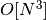
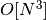
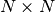
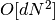
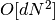
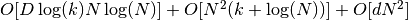
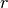
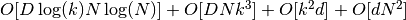
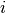
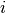

2.2. 流形学习
校验者:
@XuJianzhi
@RyanZhiNie
@羊三
翻译者:
@XuJianzhi
@羊三
Look for the bare necessitiesThe simple bare necessitiesForget about your worries and your strifeI mean the bare necessitiesOld Mother Nature’s recipesThat bring the bare necessities of life– Baloo的歌 [奇幻森林]
流形学习是一种非线性降维方法。其算法基于的思想是：许多数据集的维度过高只是由人为导致的。
2.2.1. 介绍
高维数据集会非常难以可视化。 虽然可以绘制两维或三维的数据来显示数据的固有结构，但与之等效的高维图不太直观。 为了帮助数据集结构的可视化，必须以某种方式降低维度。
通过对数据的随机投影来实现降维是最简单的方法。 虽然这样做能实现数据结构一定程度的可视化，但随机选择投影仍有许多有待改进之处。 在随机投影中，数据中更有趣的结构很可能会丢失。

为了解决这一问题，一些监督和无监督的线性降维框架被设计出来，如主成分分析（PCA），独立成分分析，线性判别分析等。 这些算法定义了明确的规定来选择数据的“有趣的”线性投影。 它们虽然强大，但是会经常错失数据中重要的非线性结构。
流形学习可以被认为是一种将线性框架（如 PCA ）推广为对数据中非线性结构敏感的尝试。 虽然存在监督变量，但是典型的流形学习问题是无监督的：它从数据本身学习数据的高维结构，而不使用预定的分类。
例子:
- 参见 Manifold learning on handwritten digits: Locally Linear Embedding, Isomap… ,手写数字降维的例子。
- 参见 Comparison of Manifold Learning methods ,玩具 “S曲线” 数据集降维的例子。
以下概述了 scikit-learn 中可用的流形学习实现
2.2.2. Isomap
流形学习的最早方法之一是 Isomap 算法，等距映射（Isometric Mapping）的缩写。 Isomap 可以被视为多维缩放（Multi-dimensional Scaling：MDS）或核主成分分析（Kernel PCA）的扩展。 Isomap 寻求一个较低维度的嵌入，它保持所有点之间的测量距离。 Isomap 可以通过 Isomap 对象执行。
2.2.2.1. 复杂度
Isomap 算法包括三个阶段:
- 最近邻搜索. Isomap 使用
sklearn.neighbors.BallTree进行有效的近邻搜索。 对于 维中
维中  个点的
个点的  个最近邻，代价约为
个最近邻，代价约为 ![O[D \log(k) N \log(N)]](img/7b0e2ed0273c0a1650cc9f78eabe93c4.jpg)
- 最短路径图搜索. 最有效的已知算法是 Dijkstra 算法或 Floyd-Warshall 算法，其复杂度分别是约
![O[N^2(k + \log(N))]](img/d459482314974b92f7f44cc36d6eae3e.jpg) 和  。 用户可通过使用 isomap 的 path_method 关键字选择该算法。 如果未指定，则代码尝试为输入数据选择最佳算法。
和  。 用户可通过使用 isomap 的 path_method 关键字选择该算法。 如果未指定，则代码尝试为输入数据选择最佳算法。 - 部分特征值分解. 对应于  isomap核中
 个最大特征值的特征向量，进行嵌入编码。 对于密集求解器，代价约为  。 通常可以使用 ARPACK 求解器来减少代价。 用户可通过使用 isomap 的 path_method 关键字指定特征求解器。 如果未指定，则代码尝试为输入数据选择最佳算法。
个最大特征值的特征向量，进行嵌入编码。 对于密集求解器，代价约为  。 通常可以使用 ARPACK 求解器来减少代价。 用户可通过使用 isomap 的 path_method 关键字指定特征求解器。 如果未指定，则代码尝试为输入数据选择最佳算法。
Isomap 的整体复杂度是 .
- : 训练数据点的个数
- : 输入维度
- : 最近邻的个数
- : 输出维度
参考文献:
- “A global geometric framework for nonlinear dimensionality reduction” Tenenbaum, J.B.; De Silva, V.; & Langford, J.C. Science 290 (5500)
2.2.3. 局部线性嵌入
局部线性嵌入（LLE）通过保留局部邻域内的距离来寻求数据的低维投影。 它可以被认为是一系列的局部主成分分析，与全局相比，找到最优的局部非线性嵌入。
局部线性嵌入可以使用 locally_linear_embedding 函数或其面向对象的等效方法 LocallyLinearEmbedding 来实现。
2.2.3.1. 复杂度
标准的 LLE 算法包括三个阶段:
- 最邻近搜索. 参见上述 Isomap 讨论。
- 构造权重矩阵.
![O[D N k^3]](img/ca22762150e0516b4847c03efd5ebf6d.jpg) . LLE 权重矩阵的构造包括每个 局部邻域的
. LLE 权重矩阵的构造包括每个 局部邻域的  线性方程的解
线性方程的解 - 部分特征值分解. 参见上述 Isomap 讨论。
标准 LLE 的整体复杂度是 ![O[D \log(k) N \log(N)] + O[D N k^3] + O[d N^2]](img/5daa1b5d6a3d63020722cb0f4b41eee2.jpg) .
.
- : 训练数据点的个数
- : 输入维度
- : 最近邻的个数
- : 输出维度
参考文献:
- “Nonlinear dimensionality reduction by locally linear embedding” Roweis, S. & Saul, L. Science 290:2323 (2000)
2.2.4. 改进型局部线性嵌入（MLLE）
关于局部线性嵌入（LLE）的一个众所周知的问题是正则化问题。当 neighbors（邻域）的数量多于输入的维度数量时，定义每个局部邻域的矩阵是不满秩的。为解决这个问题，标准的局部线性嵌入算法使用一个任意正则化参数  ，它的取值受局部权重矩阵的迹的影响。虽然可以认为  ，即解收敛于嵌入情况，但是不保证最优解情况下
，即解收敛于嵌入情况，但是不保证最优解情况下  。此问题说明，在嵌入时此问题会扭曲流形的内部几何形状，使其失真。
。此问题说明，在嵌入时此问题会扭曲流形的内部几何形状，使其失真。
解决正则化问题的一种方法是对邻域使用多个权重向量。这就是改进型局部线性嵌入（MLLE）算法的精髓。MLLE 可被执行于函数 locally_linear_embedding ，或者面向对象的副本 LocallyLinearEmbedding ，附带关键词 method = 'modified' 。它需要满足 n_neighbors > n_components 。

2.2.4.1. 复杂度
MLLE 算法分为三部分：
- 近邻搜索。与标准 LLE 的相同。
- 权重矩阵构造。大约是
![O[D N k^3] + O[N (k-D) k^2]](img/d7f26dee1f8849176f6438863fb775fb.jpg) 。该式第一项恰好等于标准 LLE 算法的复杂度。该式第二项与由多个权重来构造权重矩阵相关。在实践中，（在第二步中）构造 MLLE 权重矩阵（对复杂度）增加的影响，比第一步和第三步的小。
。该式第一项恰好等于标准 LLE 算法的复杂度。该式第二项与由多个权重来构造权重矩阵相关。在实践中，（在第二步中）构造 MLLE 权重矩阵（对复杂度）增加的影响，比第一步和第三步的小。 - 部分特征值分解。与标准 LLE 的相同。
综上，MLLE 的复杂度为 ![O[D \log(k) N \log(N)] + O[D N k^3] + O[N (k-D) k^2] + O[d N^2]](img/efb0c43ded3d4bdfb4b1d2092c8ee446.jpg) 。
。
- : 训练集数据点的个数
- : 输入维度
- : 最近邻域的个数
- : 输出的维度
参考文献:
- “MLLE: Modified Locally Linear Embedding Using Multiple Weights” Zhang, Z. & Wang, J.
2.2.5. 黑塞特征映射（HE）
黑塞特征映射 (也称作基于黑塞的 LLE: HLLE ）是解决 LLE 正则化问题的另一种方法。在每个用于恢复局部线性结构的邻域内，它会围绕一个基于黑塞的二次型展开。虽然其他实现表明它对数据大小缩放较差，但是 sklearn 实现了一些算法改进，使得在输出低维度时它的损耗可与其他 LLE 变体相媲美。HLLE 可实现为函数 locally_linear_embedding 或其面向对象的形式 LocallyLinearEmbedding ，附带关键词 method = 'hessian' 。它需满足 n_neighbors > n_components * (n_components + 3) / 2 。

2.2.5.1. 复杂度
HLLE 算法分为三部分:
- 近邻搜索。与标准 LLE 的相同。
- 权重矩阵构造. 大约是
![O[D N k^3] + O[N d^6]](img/f8e0c6c9a82bcbf369e2d0b7fc7aba8d.jpg) 。其中第一项与标准 LLE 相似。第二项来自于局部黑塞估计量的一个 QR 分解。
。其中第一项与标准 LLE 相似。第二项来自于局部黑塞估计量的一个 QR 分解。 - 部分特征值分解。与标准 LLE 的相同。
综上，HLLE 的复杂度为 ![O[D \log(k) N \log(N)] + O[D N k^3] + O[N d^6] + O[d N^2]](img/2ad6b07024498864a0ce275913a42d9f.jpg) 。
。
- : 训练集数据点的个数
- : 输入维度
- : 最近邻域的个数
- : 输出的维度
参考文献:
- “Hessian Eigenmaps: Locally linear embedding techniques for high-dimensional data” Donoho, D. & Grimes, C. Proc Natl Acad Sci USA. 100:5591 (2003)
2.2.6. 谱嵌入
谱嵌入是计算非线性嵌入的一种方法。scikit-learn 执行拉普拉斯特征映射，该映射是用图拉普拉斯的谱分解的方法把数据进行低维表达。这个生成的图可认为是低维流形在高维空间里的离散近似值。基于图的代价函数的最小化确保流形上彼此临近的点被映射后在低维空间也彼此临近，低维空间保持了局部距离。谱嵌入可执行为函数 spectral_embedding 或它的面向对象的对应形式 SpectralEmbedding 。
2.2.6.1. 复杂度
谱嵌入（拉普拉斯特征映射）算法含三部分：
- 加权图结构。把原输入数据转换为用相似（邻接）矩阵表达的图表达。
- 图拉普拉斯结构。非规格化的图拉普拉斯是按
 构造，并按
构造，并按  规格化的。
规格化的。 - 部分特征值分解。在图拉普拉斯上进行特征值分解。
综上，谱嵌入的复杂度是 。
- : 训练集数据点的个数
- : 输入维度
- : 最近邻域的个数
- : 输出的维度
参考文献:
- “Laplacian Eigenmaps for Dimensionality Reduction and Data Representation” M. Belkin, P. Niyogi, Neural Computation, June 2003; 15 (6):1373-1396
2.2.7. 局部切空间对齐（LTSA）
尽管局部切空间对齐（LTSA）在技术上并不是 LLE 的变体，但它与 LLE 足够相近，可以放入这个目录。与 LLE 算法关注于保持临点距离不同，LTSA 寻求通过切空间来描述局部几何形状，并（通过）实现全局最优化来对其这些局部切空间，从而学会嵌入。 LTSA 可执行为函数 locally_linear_embedding 或它的面向对象的对应形式 LocallyLinearEmbedding ，附带关键词 method = 'ltsa' 。

2.2.7.1. 复杂度
LTSA 算法含三部分:
- 近邻搜索。与标准 LLE 的相同。
- 加权矩阵构造。大约是
![O[D N k^3] + O[k^2 d]](img/8c187292cd29fea23a4983db349e7545.jpg) 。其中第一项与标准 LLE 相似。
。其中第一项与标准 LLE 相似。 - 部分特征值分解。同于标准 LLE 。
综上，复杂度是  。
- : 训练集数据点的个数
- : 输入维度
- : 最近邻域的个数
- : 输出的维度
参考文献:
- “Principal manifolds and nonlinear dimensionality reduction via tangent space alignment” Zhang, Z. & Zha, H. Journal of Shanghai Univ. 8:406 (2004)
2.2.8. 多维尺度分析（MDS）
多维尺度分析 Multidimensional scaling （ MDS ） 寻求数据的低维表示，（低维下的）它的距离保持了在初始高维空间中的距离。
一般来说，（MDS）是一种用来分析在几何空间距离相似或相异数据的技术。MDS 尝试将相似或相异的数据建模为几何空间距离。这些数据可以是物体间的相似等级，也可是分子的作用频率，还可以是国家简单贸易指数。
MDS算法有2类：度量和非度量。在 scikit-learn 中， MDS 类中二者都有。在度量 MDS 中，输入相似度矩阵源自度量(并因此遵从三角形不等式)，输出两点之间的距离被设置为尽可能接近相似度或相异度的数据。在非度量版本中，算法尝试保持距离的控制，并因此寻找在所嵌入空间中的距离和相似/相异之间的单调关系。

设  是相似度矩阵，
是相似度矩阵， 是
是  个输入点的坐标。差异
个输入点的坐标。差异  是以某种最佳方式选择的相似度的转换。然后，通过
是以某种最佳方式选择的相似度的转换。然后，通过  定义称为 Stress （应力值）的对象。
定义称为 Stress （应力值）的对象。
2.2.8.1. 度量 MDS
最简单的度量 MDS 模型称为 absolute MDS（绝对MDS），差异由  定义。对于绝对 MDS，值
定义。对于绝对 MDS，值  应精确地对应于嵌入点的点  和
应精确地对应于嵌入点的点  和  之间的距离。
之间的距离。
大多数情况下，差异应设置为  。
。
2.2.8.2. 非度量 MDS
非度量 MDS 关注数据的排序。如果  ，则嵌入应执行
，则嵌入应执行  。这样执行的一个简单算法是在 上使用
。这样执行的一个简单算法是在 上使用  的单调回归，产生与 相同顺序的差异 。
的单调回归，产生与 相同顺序的差异 。
此问题的 a trivial solution（一个平凡解）是把所有点设置到原点上。为了避免这种情况，将差异 标准化。
参考文献:
- “Modern Multidimensional Scaling - Theory and Applications” Borg, I.; Groenen P. Springer Series in Statistics (1997)
- “Nonmetric multidimensional scaling: a numerical method” Kruskal, J. Psychometrika, 29 (1964)
- “Multidimensional scaling by optimizing goodness of fit to a nonmetric hypothesis” Kruskal, J. Psychometrika, 29, (1964)
2.2.9. t 分布随机邻域嵌入（t-SNE）
t-SNE（ TSNE ）将数据点的相似性转换为概率。原始空间中的相似性表示为高斯联合概率，嵌入空间中的相似性表示为 “学生” 的 t 分布。这允许 t-SNE 对局部结构特别敏感，并且有超过现有技术的一些其它优点:
- 在一个单一映射上以多种比例显示结构
- 显示位于多个、不同的流形或聚类中的数据
- 减轻在中心聚集的趋势
Isomap、LLE 和其它变体最适合展开单个连续低维流形，而 t-SNE 将侧重于数据的局部结构，并倾向于提取聚类的局部样本组，就像S曲线示例中突出显示的那样。这种基于局部结构对样本进行分组的能力可能有助于在视觉上同时解开包括多个流形的数据集，如数字数据集中的情况。
原始空间和嵌入空间中的联合概率的 Kullback-Leibler（KL） 散度将通过梯度下降而最小化。注意，KL 发散不是凸的，即具有不同初始化的多次重新开始将以KL发散的局部最小值结束。因此，尝试不同的开始值并选择具有最低KL散度的嵌入有时是有用的。
使用 t - SNE 的缺点大致如下:
- t-SNE 的计算成本很高，在百万样本数据集上可能需要几个小时，而PCA将在几秒或几分钟内完成同样工作。
- Barnes-Hut t-SNE 方法仅限于二维或三维嵌入。
- 该算法是随机的，不同种子的多次重新开始可以产生不同的嵌入。然而，以最小的误差选择嵌入是完全合理的。
- 未明确保留全局结构。用PCA初始化点(使用 <cite>init=’pca’</cite> )，可以减轻此问题。

2.2.9.1. 优化 t-SNE
t-SNE 的主要目的是实现高维数据的可视化。因此，当数据将嵌入到二维或三维时，它效果最好。
优化KL发散有时可能有点棘手。有五个参数控制 t-SNE 的优化，因此可能也控制最终嵌入的质量:
- 复杂度
- 早期增长因子
- 学习率
- 最大迭代次数
- 角度（不在精确方法中使用）
复杂度（perplexity）定义为  ，其中 是条件概率分布的香农熵。k 面色子的复杂度是 k ，因此 k 实际上是生成条件概率时 t-SNE 考虑的最近邻域的个数。复杂度越大导致有越多的近邻域，则对小结构越不敏感。相反地，越低的复杂度考虑越少的邻域，并因此忽略越多的全局信息而越关注局部邻域。当数据集的大小变大时，需要更多的点来获得局部邻域的合理样本，因此可能需要更大的复杂度。类似地，噪声越大的数据集需要越大的复杂度来包含足够的局部邻域，以超出背景噪声。
，其中 是条件概率分布的香农熵。k 面色子的复杂度是 k ，因此 k 实际上是生成条件概率时 t-SNE 考虑的最近邻域的个数。复杂度越大导致有越多的近邻域，则对小结构越不敏感。相反地，越低的复杂度考虑越少的邻域，并因此忽略越多的全局信息而越关注局部邻域。当数据集的大小变大时，需要更多的点来获得局部邻域的合理样本，因此可能需要更大的复杂度。类似地，噪声越大的数据集需要越大的复杂度来包含足够的局部邻域，以超出背景噪声。
最大迭代次数通常足够高，不需要任何调整。优化分为两个阶段:早期增长阶段和最终优化阶段。在早期增长中，原始空间中的联合概率将通过与给定因子相乘而被人为地增加。越大的因子导致数据中的自然聚类之间的差距越大。如果因子过高，KL 发散可能在此阶段增加。通常不需要对其进行调谐。学习率是一个关键参数。如果梯度太低，下降会陷入局部极小值。如果过高，KL发散将在优化阶段增加。可以在 Laurens van derMaaten 的常见问题解答中找到更多提示(见参考资料)。最后一个参数角度是性能和精度之间的折衷。角度越大意味着我们可以通过单个点来近似的区域越大，从而导致越快的速度，但结果越不准确。
“如何高效使用 t-SNE” 提供了一个关于各种参数效果的很好的讨论，以及用来探索不同参数效果的交互式绘图。
2.2.9.2. Barnes-Hut t-SNE
在此实现的 Barnes-Hut t-SNE 通常比其他流形学习算法慢得多。优化是很困难的，梯度的计算是 ![O[d N log(N)]](img/f60c0101ae8f649bb02ed8b24b30fd83.jpg) ，其中 是输出维数， 是样本个数。Barnes-Hut 方法在 t-SNE 复杂度为 的精确方法上有所改进，但有其他几个显著区别:
，其中 是输出维数， 是样本个数。Barnes-Hut 方法在 t-SNE 复杂度为 的精确方法上有所改进，但有其他几个显著区别:
- Barnes-Hut 实现仅在目标维度为3或更小时才有效。构建可视化时，2D 案例是典型的。
- Barnes-Hut 仅适用于密集的输入数据。稀疏数据矩阵只能用精确方法嵌入，或者可以通过密集的低阶投影来近似，例如使用
sklearn.decomposition.TruncatedSVD - Barnes-Hut 是精确方法的近似。近似使用 angle 作为参数，因此当参数 method=”exact” 时，angle 参数无效。
- Barnes-Hut 的拓展性很高。Barnes-Hut 可用于嵌入数十万个数据点，而精确方法只能处理数千个样本，再多就很困难了。
出于可视化目的（ t-SNE 的主要使用情况），强烈建议使用 Barnes-Hut 方法。精确的 t-SNE 方法可用于检验高维空间中嵌入的理论性质，但由于计算约束而仅限于小数据集。
还要注意，数字 label 与 t-SNE 发现的自然聚类大致匹配，而 PCA 模型的线性 2D 投影产生标签区域在很大程度上重叠的表示。这是一个强有力的线索，表明该数据可以通过关注局部结构的非线性方法（例如，具有高斯 RBF 核的 SVM ）很好地分离。然而，如果不能在二维中用 t-SNE 来可视化分离良好的均匀标记组，并不一定意味着数据不能被监督模型正确地分类。可能是因为 2 维不够低，无法准确表示数据的内部结构。
参考文献:
- “Visualizing High-Dimensional Data Using t-SNE” van der Maaten, L.J.P.; Hinton, G. Journal of Machine Learning Research (2008)
- “t-Distributed Stochastic Neighbor Embedding” van der Maaten, L.J.P.
- “Accelerating t-SNE using Tree-Based Algorithms.” L.J.P. van der Maaten. Journal of Machine Learning Research 15(Oct):3221-3245, 2014.
2.2.10. 实用技巧
- 确保对所有特征使用相同的缩放。因为流形学习方法是基于最近邻搜索的，否则算法的性能可能很差。有关缩放异构数据的方便方法，请参阅 StandardScaler 。
- 由每个例程计算的重构误差可用于选择最佳输出维度。对于嵌入在 维参数空间中的 维流形，重构误差将随着
n_components的增加而减小，直到n_components == d。 - 注意，噪声数据可以对流形造成“短路”，其实质上充当了一个桥梁，用于连接流形的不同部分，否则（没有这样的“桥梁”）这些流形将被很好地划分开。噪声和/或不完全数据的流形学习是一个活跃的研究领域。
- 某些输入配置可能导致奇异加权矩阵，例如，当数据集中的两个以上点完全相同时，或者当数据被分割成不连续的组时。在这种情况下，
solver='arpack'将无法找到空空间。解决这一问题的最简单方法是使用solver='dense'，它将在一个奇异矩阵上进行，尽管它可能因为输入点的数量而非常缓慢。或者，人们可以尝试理解奇异的来源:如果它是由于不相交的集合，增加n_neighbors可能有所帮助；如果是由于数据集中的相同点，则删除这些点可能有所帮助。
See also
完全随机树嵌入 也可以用于得到特征空间的非线性表示，另外它不用降维。